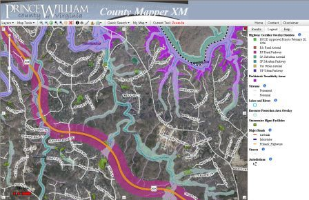

Spatial Isn't Special
Xiaoming Qin
Who am I?
- Over 10 years experience in Geospatial Field
- Expertise in both ESRI and Open Source Stack
- Take ownership and pride for everything I do
- Believe in Right Tool For Right Job
- Lifetime learner
City of Redmond, WA (2004-2008)
- Initiated Web Mapping using Intergraph WebMap 5.0
- Switched to ArcGIS Server 9.1
- Used WebADF framework/viewer
City of Redmond, WA (2004-2008)
Takeaways
- Online Mapping is the future
- Avoid Template if you can
Prince William County, VA (2008-2010)
- Managed ArcGIS Server 9.3,10.0
- Migrated County Mapper from ArcIMS to ArcGIS Server
- Used ArcGIS Javascript API
- Map Service, Geocoding Service and Caching
- General Web Services on Back End using .NET
- Developed Demographic Viewer using ArcGIS Flex API (v1.3)
Prince William County, VA (2008-2010)
Prince William County, VA (2008-2010)
Takeaways
- Take Migration as a chance to redesign the whole thing
- Think twice for map-centric application
- Start over if the app looks familiar (HINT: ArcMap)
- NO SEARCH BOX = #FAIL
- For browser-based apps, Javascript is KING
Federal Communication Commission (2010 - present)
Project: Integrated Geospatial Component of Enterprise Application
Spectrum Dashboard
- ArcGIS Server 10 and Flex API 2.0
- FME as ETL tool
- J2EE and GeoTools for geometry manipulations
National Broadband Map
- Prototype built on ArcGIS Server 10 and Javascript API
- Cost-prohibitive for scaling
- Complete Open Source Stack for final product
- GeoServer, Postgres/Postgis, OpenLayers, MonogDB
- Developed on Amazon EC2, embraced Agil methodology
- API driven, RESTful
Mexico Speed Test
- Crowdsource data collection and analysis
- Google Map, Google Geocoding, OpenLayers
- Mimic National Broadband Map architecture
Federal Communication Commission (2010 - present)
Project: Standalone GIS/Visualization Application
FCC Maps / MapBox
- Use TileMill to create tiles
- Hosted on Mapbox
- Extremely fast time-to-market, but limited functionality
- Easily sharing tileset, embedding map
Low Power FM Channel Analysis / CartoDB
- Entire PostGIS as RESTful service
- Torque library for spatial/temporal visualization
- Both SQL API and Map API for easy integration
- Both Google Map and Mapbox as base layer
Map-oriented Apps
- Rigth Tool for Right Job
- Most Open Source Tools, FME and ESRI Desktop mixed in
- Focused story, simple UI
- Easy to maintain is top priority
With or Without Map / D3.js
- Visualization framework, ultimate flexibility
- Powerful GEO package
- Integration with LeafLet.js for best of both
- Steep learning curve, tons of exmaples
Federal Communication Commission (2010 - present)
Project: GIS R/D and Prototyping
- Evaluate emerging technology
- Executed as formal project
- Delieveries as report, presentation or mock-up
Crossfilter
- Authored by d3.js creator
- Optimized to slice and dice large dataset
- Coordinated multi-dimentional visualization
Topojson
- Extension of GeoJSON that encodes topology
- Geometries compression from shared line segments
- Potential solution for handling large data set in brower
Leaflet Markercluster
- Plugin for popular Leaflet libary
- Classic point cluster solution with great performance
- Extention hook for customization
Concepts => Production Candidat
- Advantage of Agile Methology
- Short Iterations/Sprints
- Functioal product from day one
Federal Communication Commission (2010 - present)
Mobile App Development
- Mobile-Ready Mindset
- True Response Design Principle
- Native app or Web App?
- Can not be a afterthought
National Broadband Map Mobile
- JQuery Mobile Framework
- Shared Architecture with Desktop
- Same URL, routing based on browser type
Responsive Design
- Work with various devices
- Twitter's Bootstrap Framework
- TODO: Content enhance based on device type
- TODO: Use Feature-detection and Server-side enhancement
Build Applications
Data
Design
Coding
Data
Plain SQL with spatial flavor
insert into swat.block_centroid_pop_within_5600m
select b.geoid10, sum(c.pop_2011)
from census.block2010_centroid b,swat.block_centroid_pop_2163 c
where st_dwithin(st_transform(b.geom,2163),c.geom,5600)
and b.statefp10='14'
group by b.geoid10;
Python with Psycopg
try:
conn = psycopg2.connect(conn_string)
cursor = conn.cursor()
row_count=0
for s in statefp:
cursor.execute("insert into
swat.fixed_total_partial_unavail_5m
select unavail_type,state_fips,
ST_SimplifyPreserveTopology(geom,5)
from swat.fixed_total_partial_unavail
where state_fips=%(statefp)s", {'statefp':s})
conn.commit()
except psycopg2.DatabaseError, e:
if conn:
conn.rollback()
print 'Error %s' % e
sys.exit(1)
finally:
if conn:
conn.close()Java with GeoTools
public static Geometry createPolygonFromCoordinates
(List coordinates)
{
Coordinate[] coordinatesArray =
new Coordinate[coordinates.size()];
coordinates.toArray(coordinatesArray);
GeometryFactory geometryFactory =
new GeometryFactory();
LinearRing linearRing = geometryFactory.
createLinearRing(coordinatesArray);
Geometry geometry = geometryFactory.
createPolygon(linearRing, null);
return geometry;
} GDAL and OGR2OGR
ogr2ogr -t_srs "EPSG:4326"
-where "na2 = 'GM'"
polbnda_germany.shp
gltp:/vrf/grass0/warmerdam/v0eur/vmaplv0/eurnasia
'polbnda@bnd(*)_area'
ogrinfo -summary
polbnda_germany.shp
polbnda_germany | grep Extent
# Extent: (5.865639, 47.275776) - (15.039889, 55.055637)
# W S E N
GeoScripts from OpenGeo
from geoscript.layer import Shapefile
shp = Shapefile('world_boundaries/builtup_area.shp')
cities = ['CALGARY', 'VANCOUVER', 'DENVER', 'CHICAGO']
box = Bounds(-20037508,-19929239,20037508,19929239,
'epsg:900913')
for city_name in cities:
city_area = reduce(lambda x,y: x.union(y),
[f.geom for f in shp.features
("nam = '%s'" % city_name)])
city_bnds = Bounds(env=city_area.bounds(),
prj='epsg:3395').
reproject('epsg:900913')
ArcPy
#!C:\Python26\ArcGIS10.0\python.exe
# -*- coding: utf-8 -*-
import arcpy
import sys
import os
import subprocess
import json
def main():
try:
if companyCount>396:
inFeature = shapeFileDir + "\\" + shapeFile
outFeature = shapeFileDir + "\\" + shapeFile.split(".")[0] + "_disso.shp"
arcpy.Dissolve_management(inFeature,outFeature)
......
Node.js
var MongoClient = require('mongodb').MongoClient,
Server = require('mongodb').Server,
async = require('async'),
fs = require('fs');
......
var cursor = apiStat.find(query,projection);
cursor.toArray(function(err,results){
if (err) {console.log("error");congoClient.close();throw err};
console.log(results.length);
}
.......
Design
Browser Support
Web Standard
Responsive
Browser Support

Browser Wars..
(Life is Short...)

Web Standard
HTML5
CSS3
SVG
JSON and GeoJSON
API
TopoJSON (??)
Coding
Embrace opensource tools
- Github
- Postgres + PostGIS
- GeoServer + OpenLayers/LeafLet
- MapBox Basemap + API
- CartoDB
- D3
- MongoDB
- node.js
Right Proprietory Tools Mixed in
- ArcGIS Family
- FME
- Oracle
Federal Communication Commission (2010 - present)
Takeaways
- GIS *IS* IT
- DATA
- OPEN (Regardless of Choice of Tools)
- CLOUD
- MOBILE
- API
- TIME TO MARKET
- STORY TELLING, WITH OR WITHOUT MAP